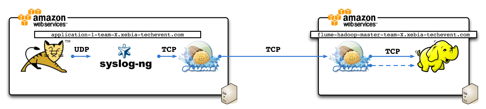

Goal
Add high availability to log aggregation and storage

Change sink from file to hdfs
agent.sinks = HDFSEventSink
agent.sinks.HDFSEventSink.channel = memoryChannel
agent.sinks.HDFSEventSink.type = hdfs
agent.sinks.HDFSEventSink.hdfs.path = hdfs://flume-hadoop-master-team-X.xebia-techevent.com
Install an another agent collector
agent.sources = avro-collection-source
agent.channels = memoryChannel
agent.sinks = HDFSEventSink
agent.sinks.HDFSEventSink.channel = memoryChannel
agent.sinks.HDFSEventSink.type = hdfs
agent.sinks.HDFSEventSink.hdfs.path = hdfs://flume-hadoop-master-team-X.xebia-techevent.com
agent.channels.memoryChannel.type = memory
agent.channels.memoryChannel.capacity = 10000
agent.sources.avro-collection-source.channels = memoryChannel
agent.sources.avro-collection-source.type = avro
agent.sources.avro-collection-source.bind = IP_THIRD_AGENT
agent.sources.avro-collection-source.port = PORT_THIRD_AGENT
Configure roundrobin on first flume agent
agent.sinkgroups = xebiaFlume
agent.sinkgroups.xebiaFlume.sinks = avro-forward-sink avro-forward-sink-secondary
agent.sinkgroups.xebiaFlume.processor.type = load_balance
agent.sinkgroups.xebiaFlume.processor.selector = round_robin
agent.sinks = avro-forward-sink avro-forward-sink-secondary
agent.sinks.avro-forward-sink.channel = memoryChannel
agent.sinks.avro-forward-sink.type = avro
agent.sinks.avro-forward-sink.hostname = IP_SECOND_AGENT
agent.sinks.avro-forward-sink.port = PORT_SECOND_AGENT
agent.sinks.avro-forward-sink-secondary.channel = memoryChannel
agent.sinks.avro-forward-sink-secondary.type = avro
agent.sinks.avro-forward-sink-secondary.hostname = IP_THIRD_AGENT
agent.sinks.avro-forward-sink-secondary.port = PORT_THIRD_AGENT